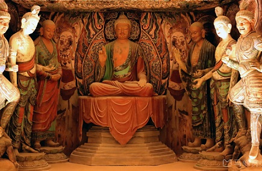
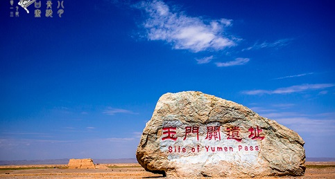
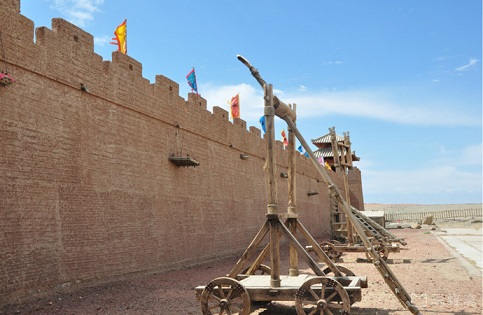
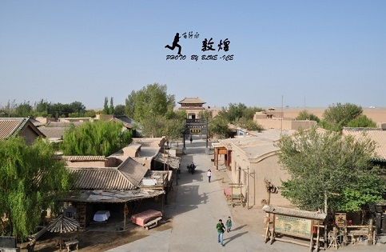

morly旅游圈
在我们的眼中，沙漠是什么样的？是干涸的，没有一草一木；是荒芜的，没有人烟；是悲壮地，埋藏生机......但我今天要给大家介绍的是一个不一样的沙漠，不是所有的沙漠都是荒凉的，还有一个地方是美的惊天动地的，那就是敦煌。
敦煌，干旱戈壁沙漠雪山组成的大西北，你可以跟着当地人，重走丝绸之路经过的地方；你可以在金色广袤的沙漠上骑着骆驼，听驼铃悠悠；你可以去诗句“西出阳关无故人”的阳关，体会故人离别的滋味；你可以奔着“春风不度玉门关”这首古诗去，缅怀历史的沧桑感；你也可以去魔鬼城探险，蔚蓝的天空，黑色的砾石，黄色的雕像，唯不见一草一木，呼呼的大风刮过幻化成各种奇怪的声音……悠久历史孕育了敦煌灿烂的古代文化，那遍地的文物遗迹、浩繁的典籍文献、精美的石窟艺术、神秘的奇山异水……使这座古城流光溢彩，更加美丽更加辉煌。
敦煌位于甘肃、青海、新疆三省（区）的交汇点，是甘肃省酒泉市辖的一个县级市，中国的国家历史文化名城。是丝绸之路的节点城市，以“敦煌石窟”、“敦煌壁画”闻名天下，是世界遗产莫高窟和汉长城边陲玉门关、阳关的所在地。
提起敦煌，很多人脑海中会浮现出漫天的黄沙、莫高窟里的“飞天”与古佛、浓浓的西域风情、苍凉的戈壁等印象。虽然敦煌的光芒已渐渐湮没在历史中，但这里曾经的辉煌依然可见。“敦煌”，本意为“盛大”，这个词语足以彰显这里显赫的过往。敦煌地处河西走廊的最西端，是古丝绸之路上的名城重镇。历史上，它是中原通往西域、乃至欧州的唯一通道，是中国、印度、希腊、伊斯兰四大古老文明的汇流地，也是西域民族集散的大舞台，充满了异域风情和古老的传说。
尘封在历史中的莫高窟，被称为“沙漠中的美术馆”和“艺术与信仰的精神绿洲”，是绝大多数旅行者造访敦煌的最大理由。莫高窟是世界上现存规模最大、内容最丰富的佛教艺术地，因为这里蕴藏着深厚的历史、辉煌的文化、极高的艺术成就、虔诚的信仰，被誉为“一生必来一次”的地方。除此之外，鸣沙山环抱中的绿洲月牙泉、西部荒凉的沙漠戈壁、西千佛洞中沉默的神佛、奇异的雅丹“魔鬼城”、存在于诗词歌赋中的玉门关和阳关、敦煌城中的瓜果与美酒、秋天时金黄色的胡杨林……这一切，都描摹出了敦煌的传奇姿态。这座曾经风情万种的苍茫大漠，至今仍流光溢彩。
必游景点
鸣沙山
由流沙积聚而成，绵延数十公里，因沙动有声而得此名。古称“沙角山”、“神沙山”。山由流沙积聚而成，东起莫高窟崖顶，西接党河水库，东西绵延40公里，南北宽约20公里，最高海拔1715米。整个山体由红、黄、绿、黑、白米粒状沙粒堆积而成，五色沙粒细软滑圆，随足颓落，经宿风吹，辄复如旧。山形美观，峰如刀刃，远看连绵起伏，如虬龙蜿蜒。遇摩擦振动，便会殷殷发声，轻若丝竹，重如雷鸣。故“沙岭晴鸣”为敦煌“八景”之一。
自古历来水火不能相容，沙漠清泉难以共存，但在鸣沙山中，却能看到沙漠与清泉相伴为邻的奇景。月牙泉被鸣沙山环抱，长约150m，宽约50m，因水面酷似一弯新月而得名，这是鸣沙山景区最著名的地方，充满了色彩和生机，宛如大漠羌笛声中的一段江南牧笛声，婉转清扬，欢快灵动。
【交通】：市区乘3路车直达，终点站即可到达景区大门。
【门票】：普通票:120人民币 (1月1日-12月31日 周一-周日)
半票:学生、60-69岁老年人及身高1.2米-1.4米的儿童持有效证件和身份证。
免票:现役军人、武警、伤残军人、军队离退休干部、军校学员、残疾人、记者、70周岁以上的老年人、甘肃省老年人（甘肃省老年人优待证）及1.2米以下儿童凭有效证件和身份证。
【开放时间】：05:00-20:30；停止售票时间:19:30 (1月1日-12月31日 周一-周日)
莫高窟
又称千佛洞，景区由莫高窟数字展示中心和莫高窟石窟两部分组成，拥有大量的壁画、石窟、文物等，是全世界闻名的佛教艺术胜地。
洞窟内到处画着佛像、飞天、伎乐、仙女等，既有高达九层楼的坐像，也有十几厘米的小菩萨，数量众多，形态各异，可以跟着讲解一一了解。
现在莫高窟对面的三危山下，仿制了部分原大洞窟，使游客在莫高窟的观赏内容更加丰富多彩。
【交通】：在市区可以直接打车前往,也可在丝路怡苑大酒店前乘坐12路公交直达莫高窟数字展示中心。
【门票】：莫高窟参观券:200人民币；外语门票:220人民币 (5月1日-10月31日 周一-周日)
莫高窟参观券:100人民币；外语门票:120人民币 (11月1日-次年4月30日 周一-周日)
半票:60-69岁老人及学生持有效证件享半价优惠。
免票:离休干部、70岁以上老人、残疾人、军人持优先证件免票；
【开放时间】：08:00-18:00 (5月1日-10月31日 周一-周日)
09:00-17:30 (11月1日-次年4月30日 周一-周日)
阳关
“渭城朝雨浥轻尘，客舍青青柳色新。劝君更尽一杯酒，西出阳关无故人。”唐代诗人王维的《送元二使安西》赋予了交通咽喉要地阳关凄怆的离愁感。
作为丝绸之路南路必经的关隘，位于敦煌市西南古董滩附近的阳关是汉代对通西域的重要门户，如今的遗址只是一个小土台。在阳关博物馆里，兵器与农具的展示向我们展示了当时将士驻守边疆的情景，远离家乡的他们在出征时往往是九死一生、马革裹尸。
【交通】：可在市区包车前往。
【门票】：普通票:50人民币 (1月1日-12月31日 周一-周日)
半票:持军官证、记者证、国内大专院校(本科以下)学生证
【开放时间】:08:00-20:00 (1月1日-12月31日 周一-周日)
玉门关
玉门关又称小方盘城，随丝绸之路的兴盛而繁盛起来，曾经是西域商贾和中原人士络绎往来的必经之地。
和田美玉自古从这里输入中原，因此得名。
来到玉门关若想见识古代城关的雄伟繁荣大多会失望，因为随着千百年来岁月的侵蚀，玉门关早已损失了当年的样貌，现在的玉门关看似是一个夯土堆的遗迹。
【交通】：玉门关在敦煌前往魔鬼城景区的路上（敦煌西线），一般在包车前往魔鬼城的行程中路过此处游玩，包小车1日往返大约在500-600元左右。
【门票】：成人票:49人民币 (1月1日-12月31日 周一-周日)
半票:60岁以上老人、学生凭相关证件可享受半价优惠。
【开放时间】:06:00-18:30 (1月1日-12月31日 周一-周日)
内容整理至网络，如有侵权，请联系我们！1255394075@qq.com
   